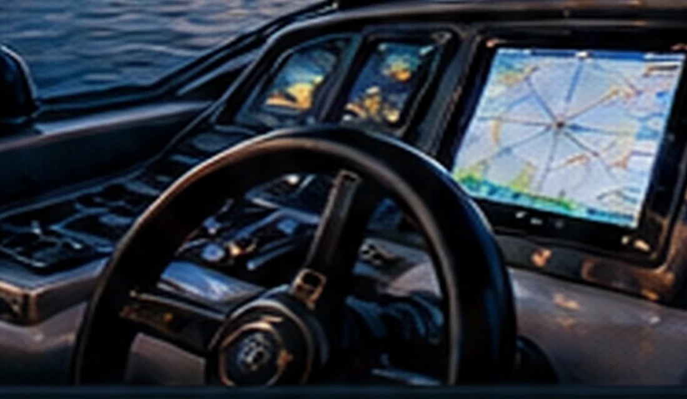

AVIATION-INSPIRED PRECISION
Marine Electrical
Expertise.
Advanced electrical diagnostics, installations, and integrated power systems for recreational boats and yachts across Greater Puget Sound.
OUR SERVICES
Complete Marine
Electrical Solutions
From troubleshooting and repairs to complete system installations, we provide marine electrical solutions tailored to your vessel's needs.
VIEW ALL SERVICES →


ADVANCED POWER SYSTEMS
Victron Energy & Mastervolt
Installation, Configuration & Integration
Hands-on experience installing and configuring Victron Energy and Mastervolt equipment, supported by in-depth knowledge of their products and system integration.
LEARN MORE ABOUT POWER SYSTEMS →ABOUT DAROCHA SYSTEMS
Engineering Knowledge.
Aviation Background.
Marine Expertise.
Over two decades of experience with complex electrical and electronic systems—including nearly 25 years in aircraft electrical and avionics systems—inform our methodical approach to marine work.
OUR BACKGROUND →
SERVICE AREA
Serving Greater Puget Sound
Based in Edmonds, Washington. Mobile marine electrical service within approximately 60 miles in a straight line from Everett, subject to location and availability.
Contact us to confirm access to your marina or vessel location.
CHECK SERVICE AVAILABILITY →CLIENT TESTIMONIALS
What Our Clients Say
LET'S TALK ABOUT YOUR VESSEL
Ready for a more reliable electrical system?
Tell us about your project and we'll discuss the next steps.